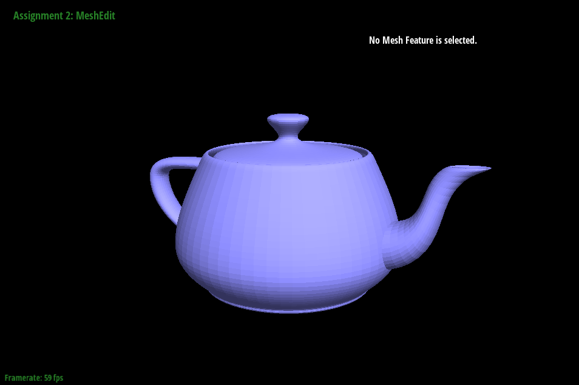

CS184/284A Spring 2025 Homework 2 Write-Up
Link to webpage: https://cal-cs184-student.github.io/hw-webpages-onion/hw2/index.html
Link to GitHub repository: https://github.com/cal-cs184-student/sp25-hw2-lasanja.git
Overview
In this homework, I implemented a Bezier curve editor that uses the de Casteljau algorithm and mesh editor that uses the Halfedge data structure for triangle meshes. Through this assignment, I gained more experience using the HalfedgeMesh data structure. I found all of the different pointer reassignments very difficult to think about so I made sure to work through all of the parts slowly on paper to ensure I understood what changes I was trying to make to the mesh. I encountered many annoying bugs caused by assigning the wrong neighbors to mesh components and it helped to go back to my drawings if I ever felt lost. My final deliverable allows for users to edit Bezier curves in both 2D and 3D and to edit meshes by flipping and splitting edges, as well as upsampling triangles.Section I: Bezier Curves and Surfaces
Part 1: Bezier curves with 1D de Casteljau subdivision
For this part, I implemented a function that calculates a single point on a Bezier curve using the de Casteljau algorithm. A Bezier curve is defined by its set of control points.
The de Casteljau algorithm is a recursive algorithm that takes those control points and subdivides space between them by a value between 0 and 1 called t until there
is only one point left which lies on the Bezier curve. At each level, this algorithm linearly interpolates between adjacent pairs of control points and returns another set of control points with one
less value than it started with. Each point returned is the interpolated point between the previous set of control points. This algorithm keeps interpolating until only one point remains.
I implemented the function evaluateStep() by defining a base case that stops the algorithm once only one point remains in the set of control points. If there was more than one point,
I iterated through every pair of control points and calculated the interpolated point between them. I'd then take that point and add it to the new return vector that holds the values of the interpolated
control points from that level of the algorithm so that the function could be called again using the newly interpolated points.

|
|
|
|
|
|
|
|
|
|
Part 2: Bezier surfaces with separable 1D de Casteljau
In this part of the assignment, I adapted my code from Part 1's 1D de Casteljau algorithm to work for Bezier surfaces. The de Casteljau algorithm involves linearly interpolating between
the control points of a Bezier curve until you only have a single point. Bezier patches are 3D surfaces defined by 3-dimensional control points in a grid. We can extend the de Casteljau algorithm
to work for 3D surfaces by interpolating over the curves in the direction of each axis. I do this by finding the curve defined by the rows of the control points by interpolating by
weight u and then interpolating with weight v over the points on that curve to get point (u, v) on the patch. My helper functions evaluateStep()
and evaluate1D, which calls the former until we're left with a single point from a single row, calculate the point over one axis of the patch.
|
|

|
Section II: Triangle Meshes and Half-Edge Data Structure
Part 3: Area-weighted vertex normals
For this part, I implemented the function normal() which calculates the area-weighted vertex normal of a given vertex. To do this, I created a loop
that iterates over all faces that have the input vertex as one of their vertices. For each face, I find the three vertices that define it, then calculate two of the
face's edges. I take the cross-product of those two edges then add it into a vector that holds the running sum of all the faces' vertex normals. The cross-product
works for this because it is a vector perpendicular to the two vectors, or edges, of the triangle that we have.
After iterating through all of the vertex's faces, I return the normalized vector of the sum of all the area-weighted normals.
A bug I came across was that my teapot was rendering the shadows incorrectly around sharp edges like the handle and spout. As I walked through my function, I realized
I wasn't moving into the next face associated with the vertex properly. I visualized how many next()s I needed before I got to the correct twin()
halfedge by drawing a vertex surrounded by six triangle faces and walking through my function on paper and it smoothed out the teapot correctly.
|
|
|
|
|
|
Part 4: Edge flip
In this section I implemented the function flipEdge(), which handles the reassignment of pointers to flip a given edge on a polygon mesh.
Before I even started writing the code, I drew out a before-and-after case of flipping an edge and spent time labelling all of the HalfedgeMesh
components involved in the flip. I listed out every component's neighbors and what halfedges they needed to be associated with so I could see what changed, following the suggestion of the spec's hint.
In the function, I started by creating variables to store references to every HalfedgeMesh component I had drawn out. Then, I went and reassigned the
the neighbors of every halfedge using the provided setNeighbors() function based on my drawn out diagram.
|
|
|
A problem I came across was edges crossing while I was testing the edge flips. I realized I had not considered the halfedges on the outer portions of the triangle and had only been reassigning the inner halfedges so I tried adding them and it fixed it. Then, I came across a new problem of the edges disappearing when I'd try to flip them. I originally hadn't reassigned the halfedge pointers for any of the edges, faces, and vertices so this crossing edge problem was fixed once I also updated those pointers. Below are screenshots recreated of my buggy code and how it affected the teapot's edge flips.
|
|
|
Part 5: Edge split
For this part, I implemented the function splitEdge() which adds a new vertex point at the midpoint of the edge to be split and splits the existing two triangles into four.
Similar to Part 4, I drew out a diagram of all the halfedge mesh components that are involved before and after an edge is split. I counted that I needed to make the following additional components:
6 halfedges, 3 edges, 2 faces, and 1 vertex. My function first finds all of the existing halfedge mesh components that exist prior to the split and assigns them to variables so it's easier to reference all of them.
Then, I reassign the neighbors of all the halfedges using setNeighbors() and reassign all edges, faces, and vertices to a related inner halfedge to ensure all pointers
are properly updated after the split. Because of the way I drew out the before-and-after diagram, my code ran as expected on the first try.
|
|
|
|
Part 6: Loop subdivision for mesh upsampling
The function I implemented in this task upsamples a triangle mesh using loop subdivision, which involves dividing each existing triangle in the mesh into four smaller
triangles through a series of mesh edge splits and flips. Although initially lost, I wrote out the function in pieces following the steps to loop subdivision provided
in the comments of the function. I start by iterating over all of the existing vertices and edges of the mesh, marking them as "old" components and updating their new
positions based on the weighting equations provided in the spec. The new positions of the vertices depend on their degree and the sum of their neighbors' positions
while the new vertices on the midpoints of the edges depend on the weights of the surrounding vertices. Then, I iterate over all the edges again to split over all of the
"old" edges using my function from Part 5. For this step in the subdivision, I modified my splitEdge() algorithm from Part 5 to mark the new and old edges that come from the split.
An issue I came across in this step was an infinite loop caused by modifying the mesh while in the loop. This is because splitting would turn the existing edges into two smaller edges
that share a new vertex. I thought I needed a way to stop from splitting edges that had already been split, so I checked if an edge had two "old" vertices instead
of the edge itself.
Afterwards, I iterated through the mesh's edges again to check for and flip any of the new edges that have one old and one new vertex. Here, I encountered
another bug such that my mesh would split its edges correctly but would never flip. I tried to isolate what was wrong by commenting out steps of the code to ensure the mesh was changing as I expected.
This bug was difficult to understand so I ended up at office hours to walk through my
upsampling algorithm, but with the TA's help we found that the problem was actually in my splitEdge() function. Stepping through the debugger I found that my condition
to check if an edge was new and had exactly one new and old vertex was never passing. The values of the vertices were as I expected, but there were much less edges marked as
"new" than there should've been. In my splitEdge() changes, I had been marking too many of the edges as "old" when they shouldn't have been because I was trying
to be explicit about what edges were changing and what weren't. I realized that I shouldn't overwrite the values of edges that weren't supposed to change during an edge split and
it fixed the code. The last step in this algorithm was to iterate over all the mesh's vertices to update the positions that were calculated at the start of the algorithm.
We wait to update the positions until after all splits, flips, and calculations are complete because we need the original positions to do the calculations correctly.
|
|
|
|
|
|
|
|
|
|
|
|
Performing loop subdivision on a mesh leads to having many more triangles in the mesh and it smoothes out the sharp edges and corners until the surface becomes more rounded. This comes from how we update the position of a vertex using a weighted average of its neighbors. The vertices we add to create additional triangles become increasingly closer to each other, resulting in a mesh with more detailed information. The original cube, when upsampled, leads to asymmetry as the corner vertices that had lower degrees stick out more than the corners with more edges connected to it. For instance, one corner vertex has degree 6 and it smoothes out the most whereas the corners that have degree 4 remain pointier. I think that preprocessing the cube to have more vertices before upsampling adds more information for the algorithm to smooth out from. It helps with making the upsampled cube more symmetrical because the vertices have equal amounts of vertices to average off of. In the bottom four pictures, I preprocessed the cube by splitting all of the original diagonal edges to make each face of the cube have the same number of vertices. After upsampling, the cube divided more symmetrically.
|
|
|
|
|
|